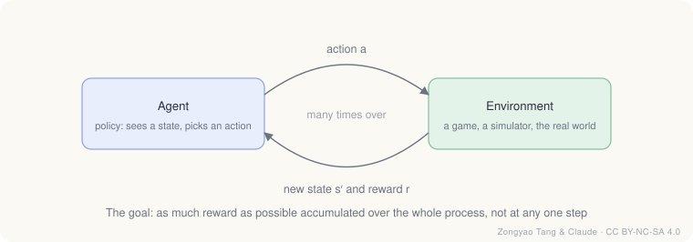

The thread: first look at the basic setting of reinforcement learning, an agent trying things again and again in an environment → its three key differences from supervised learning → these differences bring a difficulty supervised learning does not have: explore or exploit → describing such problems takes three core concepts → finally, they are put into one mathematical framework. This unit involves no specific algorithm; the goal is that when you hear these words, you know what they are talking about.
Part 10 · Reinforcement learning (optional)10.1 What reinforcement learning is
Translated by AI (Anthropic's Claude) from the Chinese edition. The Chinese original is the reference.
This unit answersHow does reinforcement learning fundamentally differ from the supervised learning studied earlier? What problem does it solve?
The starting point of part 10, explained from scratch. It needs only the basics of part 1: models, losses, gradient descent.
- A loop of learning by trial and error: agent, environment, state, action, reward
- Three differences from supervised learning: no correct answers, delayed rewards, self-produced data
- Exploration and exploitation: try something new, or use the best known
- Return, value, policy: three core concepts
- The Markov decision process: writing the problem as mathematics
Explanation
1A loop of learning by trial and error: agent, environment, state, action, reward
The basic setting of reinforcement learning is a loop: the agent observes the environment's current state and chooses an action; the environment changes as a result and gives a number as a reward; the agent sees the new state and chooses its next action. Its goal is to learn a way of choosing actions that makes the reward accumulated over the long run as large as possible.

The loop between agent and environment Match these words with a concrete example: training a program to play a brick-breaking game.
- Agent: the program we want to train. At its core is a neural network.
- Environment: the game itself. Everything outside the agent.
- State: what the agent sees at a given moment, here the current game screen.
- Action: the choices the agent can make: move left, move right, stay still.
- Reward: a number the environment gives at each step. Knocking out a brick scores 1, otherwise it is 0, and missing the ball can count as −1.
The course of one episode.
- The environment gives the initial screen s₀.
- The agent looks at s₀ and chooses an action a₀ (say, left).
- The environment carries out this action, the screen becomes s₁, and it gives the reward r₁.
- The agent looks at s₁ and chooses a₁…
- Until the game ends. This whole string of "states, actions, rewards" is called a trajectory, or an episode.
The goal. Not to make the reward of any one step as large as possible, but the reward accumulated over the whole episode. This distinction matters: sometimes an action that looks unprofitable at the moment (first sending the ball into a corner at the side) brings a much larger gain later (the ball slips above the bricks and scores again and again).
What is learned. A rule of "on seeing this state, choose this action", called a policy. At the start of training the policy is random, and the agent presses buttons at random; as it keeps playing and keeps adjusting according to the rewards it gets, the policy gradually improves.
This framework is very broad. Swap in another set of nouns, and it describes many problems that seem to have nothing to do with each other:
Problem State Action Reward Playing Go The board Where to place a stone +1 for a win, −1 for a loss A robot walking The angle and speed of each joint The torque of each motor More the faster it moves forward, minus for falling Cooling a data centre Temperatures and loads everywhere Adjusting valves and fans More the less power used, minus for overheating Getting a language model to do maths problems The problem and what has been written so far The next token +1 if the final answer is right The last row is the topic of 10.4: treat generating text as a string of actions, and reinforcement learning can be used to train language models.
An analogyLike teaching a puppy to shake hands: you cannot explain the movement to it. It does all sorts of things at random, and when it happens to lift a paw you give it a treat. After enough times, it has learned that "in this situation, lifting a paw pays off".
So reinforcement learning suits problems where "you cannot say how it should be done, but once it is done you can judge whether it was good". It needs no one to label the right way to do it in advance, only a rule that can score the result.
Used later in Three differences from supervised learning: no correct answers, delayed rewards, self-produced dataSourcesSutton & Barto chapter 1, introduction: what reinforcement learning isOpenAI Spinning Up: Key Concepts in RL- The loop looks simple. Only by setting it beside the supervised learning of part 1 can you see where it is hard.
2Three differences from supervised learning: no correct answers, delayed rewards, self-produced data
In supervised learning, each input comes with a correct output, and the model learns to imitate. In reinforcement learning: nobody tells the agent what the right action is, it only knows how many points it got after acting; the score often comes much later, making it hard to say which step deserves the credit; and what data it sees depends on what actions it chose itself.
Recall supervised learning (part 1). The training data is pairs of (input, correct answer). The model makes a prediction, the loss function measures the gap between prediction and answer, and the gradient tells each parameter how to adjust. Pretraining a language model works this way: the input is the preceding text, and the answer is the real next word.
Difference one: only evaluation, no instruction. Supervised learning's feedback is "the correct answer is B", which points the direction directly. Reinforcement learning's feedback is "you chose A and got 3 points". Is 3 high or low? Would B have been better? No way of knowing, except by trying.
The consequence: you cannot take the gradient of the "reward" directly to improve actions. The reward is given by the environment, and the environment is a black box to the agent (neither the rules of a game nor the laws of the physical world are differentiable functions). 10.2 covers two routes around this obstacle.
Difference two: rewards are delayed. A game of Go takes over two hundred moves, and only at the end do you know who won. If you won, which moves deserve the credit? If you lost, which move was the mistake? This is called the credit assignment problem.
The consequence: a way is needed to "share out" the final result over each earlier decision. The "value" covered later in this unit exists for this.
Difference three: the data is produced by the agent itself. A supervised learning dataset is prepared in advance and fixed. Reinforcement learning's data is the trajectories of the agent interacting with the environment: what action it chose decides what state it will see next.
There are three consequences:
- *The problem of exploration.* An action the agent has never tried, it will never know whether it is good. Next card.
- *The distribution of the data keeps changing.* When the policy changes, the states it meets change. A robot that has just learned to take a few steps never sees data on "how to keep balance while running fast". The target of training keeps moving, which makes training unstable.
- *The data has to be produced on the spot.* Every time the policy is improved, the new policy has to interact with the environment again to produce new data. This is the main reason reinforcement learning takes so long, and the core around which the system design of 10.3 is built.
A comparison table.
Supervised learning Reinforcement learning Feedback The correct answer A score When feedback comes Immediately Possibly much later Where data comes from A fixed dataset Its own interaction with the environment Distribution of the data Unchanging Changes with the policy The ceiling it can reach The level in the data Can surpass any existing demonstration The last row is why reinforcement learning is worth all this trouble. Imitation can only learn up to the level of the demonstrator; through trial and error and reward, an agent can discover better ways that nobody has demonstrated. AlphaGo playing moves no human player had played rests on this.
An analogySupervised learning is like correcting homework against the answer key. Reinforcement learning is like learning to ride a bicycle: nobody can tell you how hard to push at every moment, you only know you just fell off; the cause of the fall may be a movement three seconds earlier; and if you do not get on and try, you learn nothing at all.
So reinforcement learning is much harder than supervised learning, and much hungrier for data. A problem that supervised learning can solve should not be given to reinforcement learning. Its value lies where supervised learning cannot reach: tasks with no ready-made answers to imitate.
Builds on A loop of learning by trial and error: agent, environment, state, action, rewardThe loss function is not made up: it comes from maximum likelihoodUsed later in Exploration and exploitation: try something new, or use the best knownThe policy route: adjust the policy directly, making high-scoring actions appear more oftenPPO: change the policy only a small step at a timeWhat problems suit reinforcement learningSourcesSutton & Barto chapter 1: how reinforcement learning differs from supervised and unsupervised learning- The third difference leads to a problem supervised learning does not have at all.
3Exploration and exploitation: try something new, or use the best known
At every step the agent faces a choice: pick the action with the highest gain known so far (exploitation), or try an action it knows little about (exploration). Only exploiting, it may never discover a better way; only exploring, it keeps wasting chances. A good learning process balances the two, usually exploring more early on and exploiting more later.
The simplest example: the multi-armed bandit. In front of you are 10 slot machines, each with a different average payout, but you do not know what each is. You have 1000 pulls, and the goal is the largest total payout.
- After a few pulls, you have a rough estimate for each machine.
- Next, do you keep pulling the one with the highest estimate, or try the others some more?
The machine with the highest estimate may just have been lucky and hit a few high payouts. The truly best machine may have had bad luck on its first two pulls and been given up early. Only exploiting, you get locked in by early chance. But share the 1000 pulls equally among the 10 machines, and you waste 900 on the 9 worse ones.
Chapter 2 of Sutton & Barto is devoted entirely to this problem, because it is the purest expression of what sets reinforcement learning apart from other kinds of learning.
The simplest method: ε-greedy. Set a small probability ε (say 0.1). At each step: with probability 1−ε choose the action currently estimated best; with probability ε choose one at random. So every action gets tried again and again, the estimates grow more and more accurate, and most of the time the current best is used. ε is usually made to shrink gradually over training: explore more early, exploit more later.
Another common method: make the policy itself random. The policy outputs not one definite action but a probability for each action, and samples by these probabilities. At the start the actions have similar probabilities, so exploration is thorough; as learning goes on, good actions become more and more probable, passing naturally into exploitation. The policy gradient methods of 10.2 work this way. A language model sampling its next token by probability during generation is, seen this way, also a policy with randomness.
In full reinforcement learning, exploration is harder. A slot machine has only one step. In multi-step problems, finding a good result may need dozens of actions in a row done right, which random trying will almost never hit. In tasks where rewards are rare (reward only for completing the whole maze), exploration is the biggest difficulty, and a large body of research is devoted to it.
Its effects on training.
- Results are highly random: the same algorithm with the same settings and a different random seed may give very different results. Evaluating a reinforcement learning method usually means running many seeds.
- Training curves jitter: the actions taken while exploring are often poor, dragging down performance at the time.
- Behaviour differs between training and use: training has to explore, while in actual use exploration is usually switched off and only the best action is used.
An analogyLike choosing restaurants in an unfamiliar city: always going to the best one known is safe, but may miss better ones; always trying a new one may bring pleasant surprises, and plenty of disappointments too. The longer you live there and the more you have tried, the more you should go straight to your few favourites.
So reinforcement learning algorithms always have a mechanism controlling "randomness". It is not noise but something learning needs. It is also one reason reinforcement learning's training curves jitter much more than supervised learning's.
Builds on Three differences from supervised learning: no correct answers, delayed rewards, self-produced dataUsed later in Return, value, policy: three core conceptsThe value route: learn to score each action, then pick the highest scoreSourcesSutton & Barto chapter 1: the trade-off between exploration and exploitationSutton & Barto chapter 2: multi-armed bandits- To make "as much reward accumulated over the long run as possible" precise takes three concepts. Every algorithm after this is built around them.
4Return, value, policy: three core concepts
The return is the sum of all rewards from some moment on (with more distant rewards discounted more), and it is what the agent really wants to maximise. Value is "how much return is expected after being in some state (or after taking some action in some state)", a prediction about the future. A policy is the rule from states to actions, the agent's behaviour itself.
Return. Starting from step t, add up the rewards received after it:
G = r₁ + γ·r₂ + γ²·r₃ + …
γ is the discount factor, a number a little below 1 (say 0.99). The later a reward, the more it is discounted. Why discount:
- Mathematically, without a discount this sum may be infinite in tasks that never end.
- Intuitively, the further the future, the less certain it is, and rewards close at hand are more reliable.
- γ also controls the agent's "horizon": 0.9 looks roughly 10 steps ahead, 0.99 about 100 steps.
The agent's goal, stated precisely, is to maximise the expected value of the return.
Policy. A function: input a state, output an action (or a probability for each action). Written π. In deep reinforcement learning it is a neural network: the input is a state (a screen, sensor readings, a passage of text), the output a probability distribution over actions.
Value functions. There are two commonly used forms:
- *State value V(s)*: starting from state s and acting by policy π from then on, how much return is expected. It answers "how good is this position".
- *Action value Q(s, a)*: taking action a first in state s, then acting by policy π, how much return is expected. It answers "how good is this move in this position".
Note that value is relative to a policy: from the same position, a master and a beginner continuing play would expect different outcomes.
Value solves the "delay" problem of the second card. A reward tells you only what was gained or lost at the moment, and is often 0. Value converts all future rewards into the present. With an accurate value function, you need not wait for the end of the game to know whether a move was good: just look at the value of the position after it. It turns a long-term problem into one that can be judged at every step.
How the three relate.
- Given a policy, its value function can be estimated (by a great deal of trial play): this is called policy evaluation.
- Given the action value Q, a better policy can be obtained: in each state, choose the action with the largest Q. This is called policy improvement.
- The two alternate: evaluate the current policy, improve it on that basis, evaluate the new policy… policy and value function push each other to get better. Almost every reinforcement learning algorithm is some form of this loop.
An important recursive relationship. A state's value = the reward of this step + γ × the value of the next state (in expectation). This is called the Bellman equation. What it says is: long-term value can be split into "the step at hand" plus "the value after it". The temporal-difference learning of 10.2 takes exactly this equation as its learning target.
An analogyA chess player looks not at "how many pieces this move captures" (the immediate reward) but at "whether the position after this move is good" (value). Whether the position is good depends in turn on how both sides will play afterwards (the policy). The difference between a master and a beginner lies in how they judge positions.
So the various reinforcement learning algorithms learn no more than one or both of these: a value function to judge good and bad, or a policy to act directly. The two routes of 10.2 come from this.
Used later in The Markov decision process: writing the problem as mathematicsTemporal difference: no need to wait for the outcome; correct this step's estimate with the next step'sSourcesSutton & Barto chapter 3: returns and episodesSutton & Barto chapter 3: policies and value functionsOpenAI Spinning Up: Key Concepts in RL- Finally, these concepts get a unified framework. It is also terminology you will meet again and again when reading reinforcement learning papers and documentation.
5The Markov decision process: writing the problem as mathematics
Put together, the concepts above have a standard mathematical name: the Markov decision process (MDP). It consists of a set of states, a set of actions, the rule for "after taking some action in some state, with what probability it moves to which state and how much reward it gets", and a discount factor. "Markov" refers to an assumption: what happens next depends only on the current state and action, not on earlier history.
The four components.
- The set of states S: every situation the environment can be in.
- The set of actions A: every choice the agent can make.
- The environment's dynamics: the probability of moving to state s′ and receiving reward r after taking action a in state s. It describes "how the environment works". The agent usually does not know it, and can only get a feel for it through interaction.
- The discount factor γ.
What the agent looks for is a policy that maximises the expected return.
The Markov property. The environment's next response depends only on the current state and action. In other words, the "state" must contain all the information needed for the decision.
In reality this often does not quite hold:
- A single frame of the brick-breaking game does not show which way the ball is flying. The solution is to stack the last few frames together as the state.
- A robot can see only its sensor readings, not the true state of the whole world.
- In a conversation, the meaning of the current sentence depends on all the conversation before it. So a language model's "state" is the whole text so far.
When what the agent sees is not enough to determine the environment's state, it is called "partially observable". The practical remedy is to have the state include a stretch of history, or to use a network with memory. Transformers fit naturally here: their input is the whole history anyway.
Two key choices when defining a problem.
*What goes in the state.* Too little, and the information is not enough to learn a good policy; too much, and it contains a lot of irrelevant material and learns slowly.
*How the reward is designed.* This is where things go wrong most easily. The agent will maximise exactly the reward you give it, not the result you have in mind. When the two diverge, it will find "shortcuts" you never expected:
- A robot rewarded for "speed of moving forward" may learn a strange but fast way of tumbling, rather than walking.
- An agent in a boat-racing game rewarded for "score" discovers that going round in circles collecting the same bonus item over and over scores more than finishing the race.
- A conversational model rewarded for "the user clicked like" may learn to flatter users relentlessly.
This is called reward hacking. It is not the algorithm malfunctioning; it is precisely the algorithm being too effective. As 10.4's look at industry applications will show, where rewards come from and whether they can be trusted is the first problem every application has to solve.
That is the end of this unit. You now have the whole vocabulary for describing reinforcement learning problems: agent, environment, state, action, reward, return, policy, value, exploration, MDP. The next unit covers how a policy is actually learned.
An analogyLike chess: to decide the next move, you only need to look at the current board, not to know how the position was reached step by step. The board already contains all the information needed to decide.
So the first thing in handing a real problem to reinforcement learning is to define these four things, the most crucial being the state and the reward. If the state lacks necessary information, or the reward does not accurately express the result you want, no algorithm afterwards, however good, will help.
Used later in Aligning large models: human preferences as the reward (RLHF)What problems suit reinforcement learningSourcesSutton & Barto chapter 3: finite Markov decision processesSutton & Barto chapter 3: optimal policies and optimal value functions
Putting it together
Reinforcement learning studies how an agent, through repeated interaction with an environment, learns to choose the actions that bring the most reward. It has no correct answers, only scores after the fact; the scores are often delayed; and the training data is produced by the agent's own behaviour. So it has to trade off between exploration and exploitation. The return is accumulated reward, value is the expectation of future return, and a policy is the rule from states to actions. All of this is described by a Markov decision process.
Test yourself
Without looking back at the explanation, say it in your own words.
- What elements make up the basic loop of reinforcement learning? What is the agent's goal?
- What are the three fundamental differences between reinforcement learning and supervised learning? What difficulty does each bring?
- What is the dilemma of exploration and exploitation? What is the simplest way of balancing them?
- What are the return, the value function and the policy? How do they relate to each other?
- What parts make up a Markov decision process? What does the "Markov property" mean? Which two things are most likely to go wrong when defining a reinforcement learning problem?